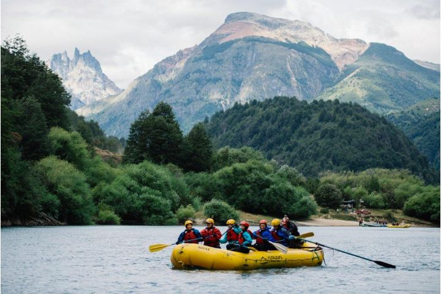
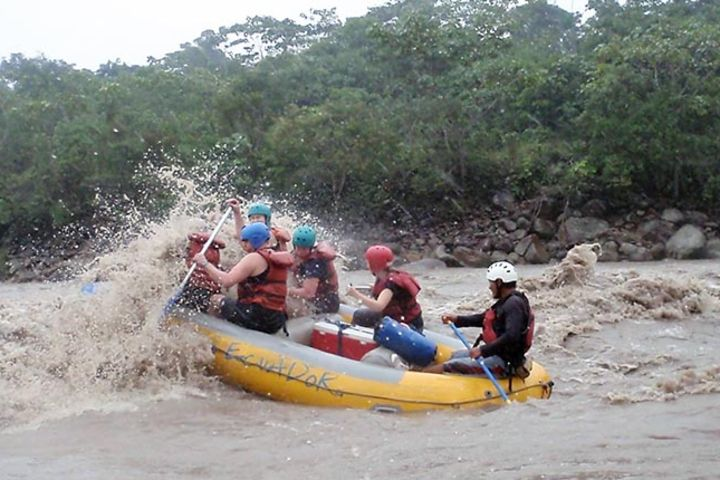
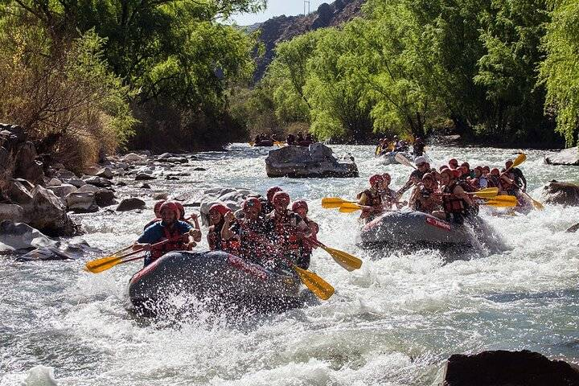

Are you Ready for your Life's Adventure

Our Rafting Trips
Top Trips this Season

Futaleufu River Trip
Futaleufú River rafting trips offer world-class turquoise whitewater in Chilean Patagonia, featuring sections like Bridge to Bridge, Terminator, and Inferno Canyon

Jatunyacu River Trip
The Upper Rio Napo is also known as the Rio Jatunyacu, which means “BIG WATER” in Quichua. “Big” is probably the best word to describe this river – BIG WAVES and BIG FUN!
Atuel River Trip
Get ready to paddle and have fun in the water! You will practice rafting on the Atuel River, in San Rafael, navigating class II rapids in a rubber raft. Accompanied by professional guides, you will enjoy water games and landscapes of canyons, rock formations, and vegetation
***
Look for more details in the table
⬇️

The Best Options For You
| Trip Location | Country | Difficulty | Trip Itinerary | Trip Fare |
|---|---|---|---|---|
| Atuel River | Argentina | Beginner | 1-Day Trip | $75.00 |
| Futaleufu River | Chile | Beginner | 1-Day Trip | $75.00 |
| Futaleufu River | Chile | Advanced | Half-Day Trip | $110.00 |
| Jatun Yacu River | Ecuador | Beginner | 1-Day Trip | $50.00 |
| San Pedro River | Bolivia | Intermediate | 1-Day Trip | $50.00 |